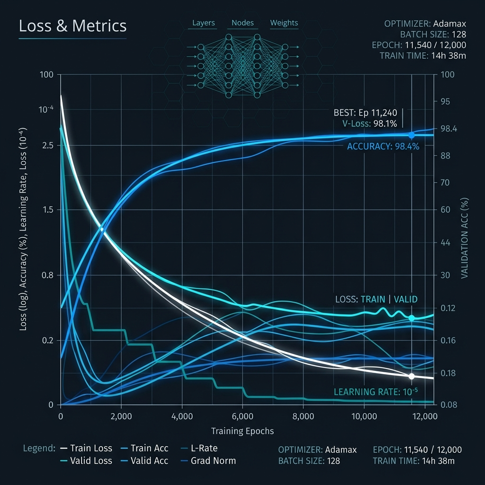

The stack.
Three layers, built for the conditions that stop existing autonomy systems.
Sense
Probabilistic sensor fusion built for the conditions that stop existing systems, including dust, mud, GPS loss, and blocked sightlines. The system fuses LiDAR, radar, and vision into one live model of the environment.
Path
Trajectory optimization for terrain that no map describes. A small evolutionary neural network learns smooth, physically valid paths in real time, and B-spline continuity keeps the ride stable when new obstacles are detected.
Ops
Multi-vehicle coordination across an entire deployment, covering mission planning, secure software updates, telemetry, and fleet command. Built for defense convoys and construction material transport.
Working math, today.
Our path-evolution engine is already running. A 64-genome evolutionary neural network learns obstacle-avoidance trajectories in real time, converging to a loss of 2.97×10⁻⁵ over 98 generations on test data.
It isn't the final product, but it isn't vaporware either. The math works, the model converges, and the path it generates is smooth and physically drivable.
View the live prototype→
Three things changed in the last 24 months.
Solid-state LiDAR collapsed in price.
Long-range LiDAR dropped from $75,000 in 2015 to under $500 in 2025, with sub-$200 production targets by 2028. The hardware wall is gone.
Foundation models for perception matured.
Vision transformers and vision-language-action models can now generalize across terrain types with a fraction of the training data needed five years ago.
The math caught up to the deployment need.
Manifold-constraint optimization and B-spline trajectory planning already exist in research papers. What's left to close is engineering, not theory, and that's a five-year window.